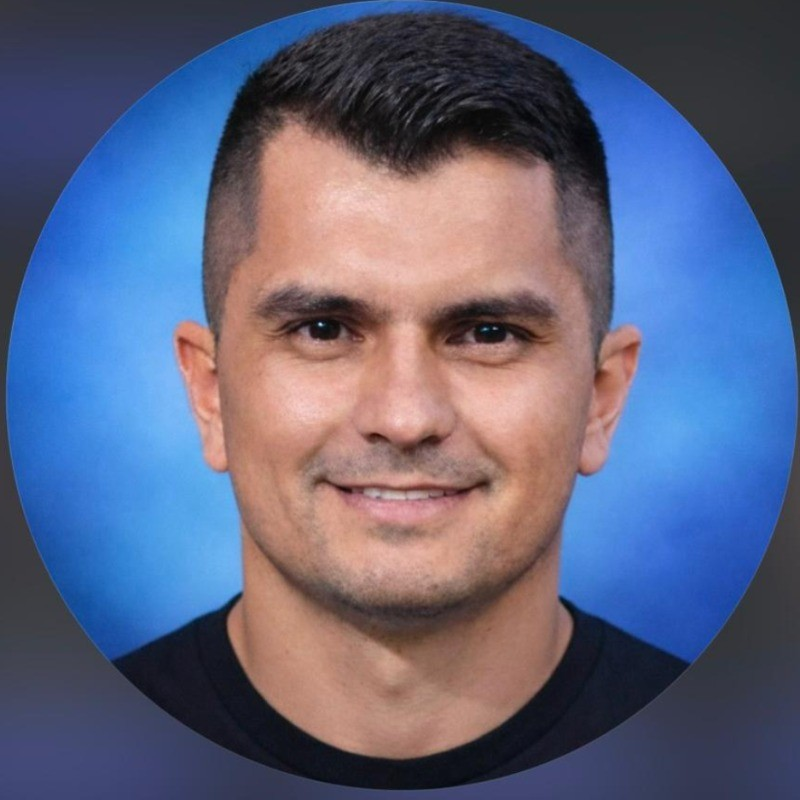
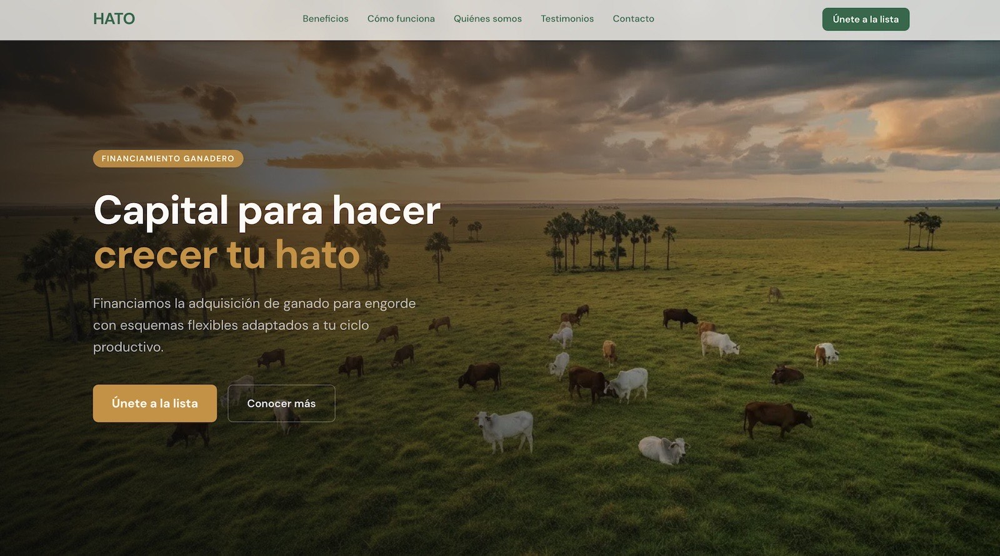
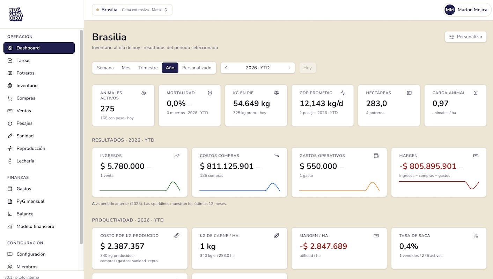

Marlon Mojica
Growth & Product Lead | Fintech & Cattle Tech | Aprendiendo Full-Stack
Profesional en Finanzas y Product Manager. Co-fundador de Neoganadero (SaaS ganadero con WhatsApp + dashboard) y CEO Cofundador de HATO (infraestructura financiera para ganadería en LATAM). Estudiando Full-Stack en TripleTen porque entiendo que el mejor producto sale cuando quien lo diseña también puede construirlo. Trabajo con HTML, CSS, JavaScript, Git y Figma.

Habilidades y herramientas


Proyectos destacados
-

HATO — Infraestructura financiera ganadera
Plataforma fintech que transforma activos ganaderos en instrumentos financieros líquidos. Lidero la estrategia de producto, alianzas y estructuración. Diseño y validación con clientes reales en Colombia. Construido con el equipo: Next.js + FastAPI + PostgreSQL, desplegado en Vercel y Render.
-

Neoganadero — SaaS ganadero con WhatsApp + IA
SaaS de gestión ganadera con captura por WhatsApp (registro en finca por voz) y dashboard web para el productor. Stack: Next.js + Supabase + Vercel + APIs de Claude (Anthropic), Whisper (OpenAI) y Meta Cloud. Hoy con 276 animales reales gestionados en producción.